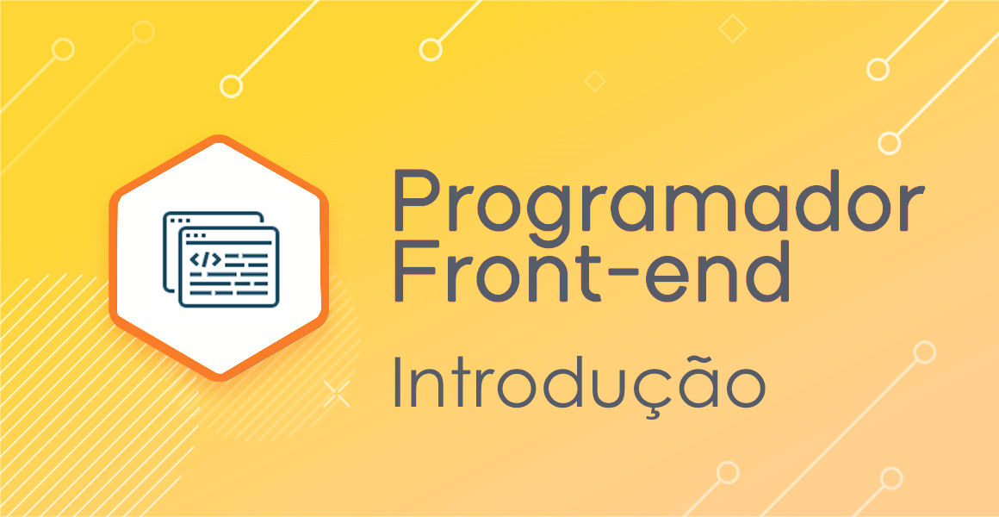

Este é o módulo 1 do curso!

Objetivo: Introdução ao Front-end
Você sabe o que é Front-end?
O desenvolvedor front-end é responsável por “dar vida” à interface. Trabalha com a parte da aplicação que interage diretamente com o usuário. Por isso, é importante que esse desenvolvedor também se preocupe com a experiência do usuário. Na parte de estudo, este profissional foca em HTML (linguagem de marcação), CSS (linguagem de estilo) e JavaScript (linguagem de script/programação).

Agora que você já está familiariado a respeito do que se trata um desenvolvimento Front-end, já está está preparado para iniciar o curso. Como dito anteriormente, neste módulo utilizaremos a linguagem de marcação HTML 5, a linguagem de estilo CSS e JavaScript que é uma linguagem de programação.
Contruiremos o código dos nossos projetos através da plataforma Visual Studio Code(VS), que está disponibilizada para download gratuito no site da microsoft.
Para acessar o resumo e explicação das aulas, basta clicar no menu vertical à esqueda. O ordem das aulas não são sequenciais pois está intercalado com as aulas de soft, as quais você pode acessar na plataforma da resilia. Este site apenas lhe fornece resumos das aulas de tech, beleza?!
Bons estudos!